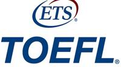
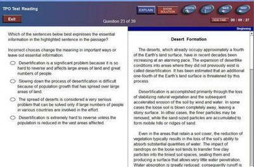
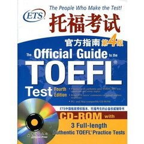
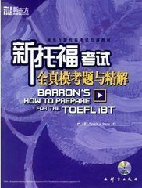
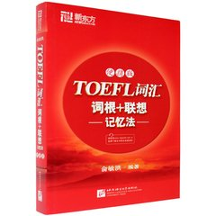

百度一下TOFEL TEST |
|||||||||
基本信息托福（The Test of English as a Foreign Language，简称TOEFL），是由美国教育测验服务社（ETS）举办的英语能力考试，全名为“检定非英语为母语者的英语能力考试”，中文音译为“托福”。大多数的美国大学或研究所要求外国学生在申请时提出过一定标准的托福考试成绩。从1964年创立以来已有两千多万人次参加了托福考试。过去的托福是用纸笔测验，后来改为电脑测验，现已改为网考，学生需付费参加此考试，在各国皆有ETS的分部负责在主要城市举办定期考试。2014年4月29日，据英国《英中时报》报道，英国内政部已经于4月初结束了跟托福(TOFEL)所在的美国教育考试机构ETS的合作。赴英签证将不再接受包括托福、托业在内的成绩。
|
 | ||||||||
目录 |
教育部考试中心托福网考网上报名 http://toefl.etest.net.cn/cn/CreateProfile |
||||||||
基本简介TOEFL，Test of English as a Foreign Language，由美国教育测验服务社( ETS, Educational Testing Service)在全世界举办，是一种针对母语非英语的人进行的英语水平的考试。TOEFL是出国留学(美国、加拿大)的必备考试成绩，美国和加拿大已有超过2400所大学和学院承认这项考试成绩，规定了申请者的最低TOEFL录取分数线。TOEFL成绩与奖学金的成功率是相关的。一般来说，如果中国考生的TOEFL成绩能达到580分，则很有可能被美国普通大学的研究生院录取；如果能考到620分左右，则申请奖学金的机会就更大了。 国外许多政府部门，私人或机构奖学金计划，执照证明机构等也是依据TOEFL成绩来评审接受人的英文程度。在中国，TOEFL亦是英语水平的一种证明，有一些单位(特别是三资企业)采用它衡量应聘者的英语水平。从一九九八年七月起，托福考试在许多国家从传统的纸笔方式转变成电脑方式。但亚洲一些国家，如中国大陆、台湾和香港澳门地区等仍采用原来传统的纸笔方式，暂时不作改变。预计2002年下半年实现计算机化考试 纸笔考试是由正确答案的数量总和来决定成绩总分，而不管问题的难易。电脑考试则不同，它根据回答问题的质量来给出下一个问题，如果考生回答得正确，电脑将提高问题的难度；如果考生回答错误，电脑将降低问题难度。因此成绩是由正确答案的难度来决定得分，而不是由正确答案的数量。电脑考试的写作一项，考生可以选择打字或书写。 电脑考试的费用：美国及其属地和加拿大为USD，所有其它国家为USD。 美国和加拿大的高等院校以及研究机构对toefl考生的录取分数线没有统一的规定。四分之三的美国考生toefl成绩达到550分左右。要想进入名牌大学学习，toefl成绩起码应达到600分以上。其中，有些专业（如英国文学、人文科学、新闻学、商业管理等）对toefl的成绩要求较高；另一些专业（如自然科学、计算机、数学等）对toefl成绩的要求则略低。但是，要想申请获得奖学金资助，其toefl成绩则须达到600分左右。美国的管理学研究生院在招收学生时除要求gmat成绩外，对外国学生还要求较高的toefl成绩。 |
|||||||||
考试形式
|
 机考界面 | ||||||||
考试费用
|
您也许会喜欢： 美国留学办理流程申请功略-美国力学优势 2014美国大学信息系统专业排名 生活在美国 |
||||||||
参考资料
|
 新托福考试官方指南 |
||||||||
|  Barron |
|||||||||
|  Delat |
|||||||||